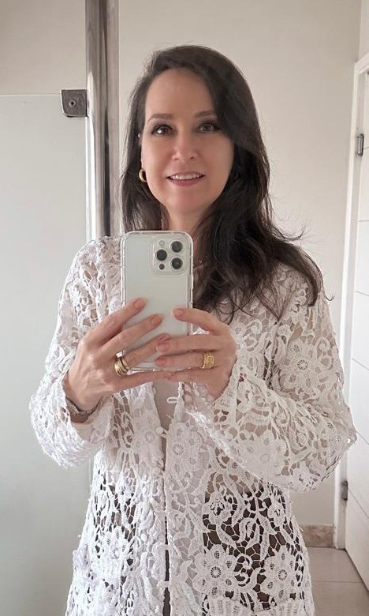
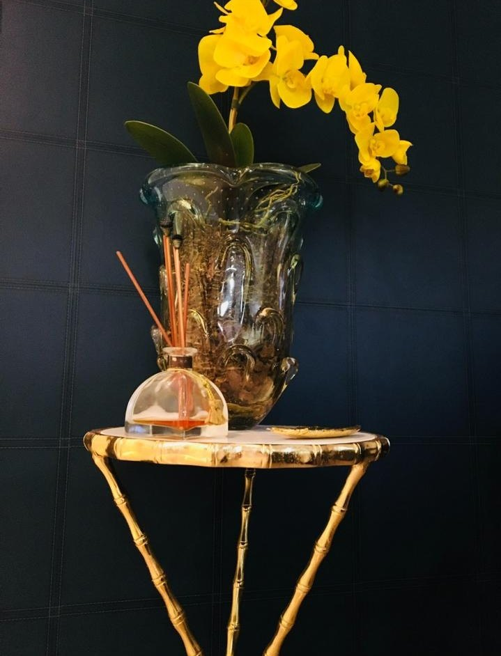
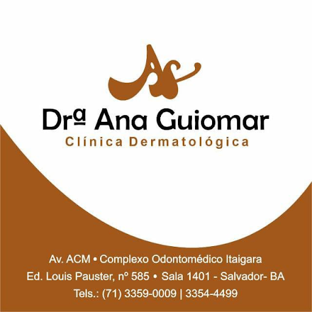
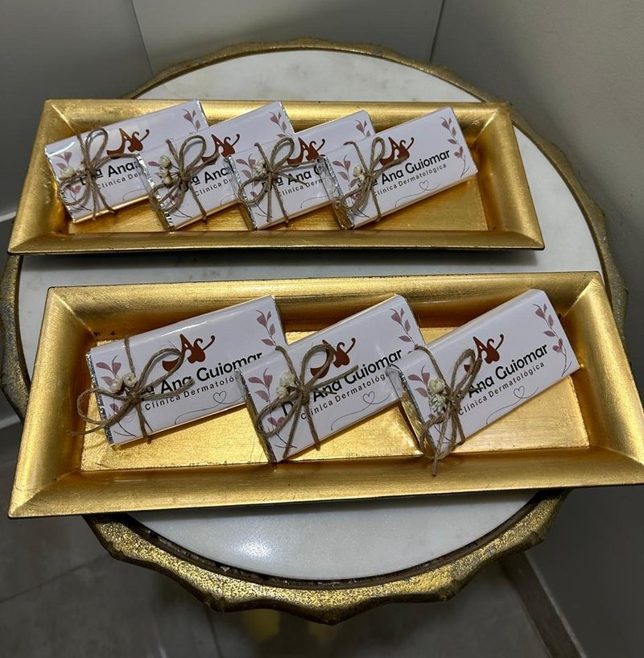
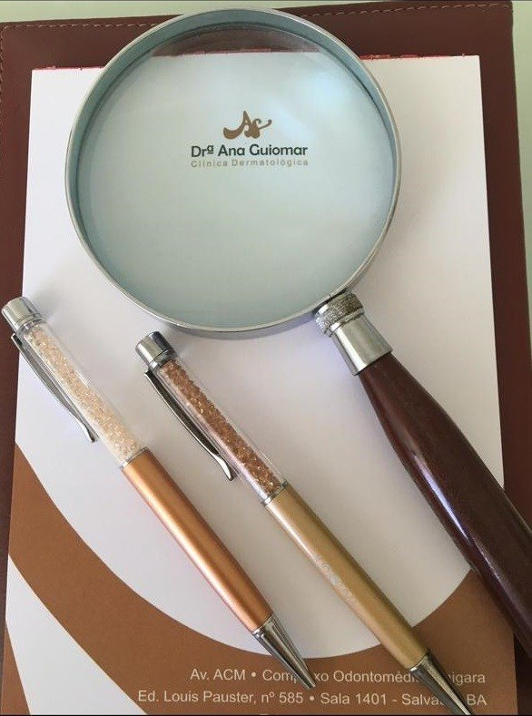

DermatologistaCRM-BA 12045RQE 5584
Dra. Ana Guiomar, dermatologista à frente da própria clínica desde 1998.
A Dra. Ana Guiomar Rivera Franco é dermatologista, com título na especialidade (RQE 5584), e membro titular da Sociedade Brasileira de Dermatologia. Atende pacientes particulares, com hora marcada, no Ed. Louis Pasteur, no Complexo Odontomédico Itaigara, em Salvador.


Por onde começar
O que trouxe você até aqui?
Cada página reúne informações gerais sobre um tema da dermatologia e o que vale conversar na consulta com a Dra. Ana Guiomar.
Uma queixa na pele, no cabelo ou nas unhas
Acne, alergias, micoses, pintas e queda de cabelo: o que a consulta dermatológica avalia.
Dermatologia clínicaManchasManchas e os cuidados de todo dia
Melasma, manchas do sol e a proteção solar que vale para qualquer pele.
Manchas e cuidadosEstéticaTecnologias e peelings no consultório
Procedimentos de dermatologia estética, com indicação individual.
Estética no consultórioConsultaComo funciona a consulta particular
Como agendar, o que levar e o que esperar da primeira consulta.
Atendimento particularTambém: quem é a Dra. Ana Guiomar · a clínica · contato e como chegar

Desde 1998
Uma clínica com o nome dela, aberta em 1998.
A clínica da Dra. Ana Guiomar foi aberta em 24 de março de 1998, com ela como sócia-administradora desde a abertura, e segue ativa até hoje.
No Cadastro Nacional de Estabelecimentos de Saúde (CNES), a Clínica de Dermatologia Dra. Ana Guiomar aparece como clínica de especialidade, com uma única médica cadastrada: a própria Dra. Ana Guiomar.
- 24/03/1998Abertura da clínica; hoje, ela é a única sócia
- Membro titularSociedade Brasileira de Dermatologia, Regional Bahia
- RQE 5584Registro de qualificação em Dermatologia
- Sala 1401Hoje, no Ed. Louis Pasteur, Complexo Odontomédico Itaigara
O cuidado nos detalhes
Na clínica, o cuidado também está nos detalhes.
As fotos que a própria clínica publicou mostram um jeito de receber: chocolates com o rótulo da clínica em bandejas douradas, nécessaires rosé com laço e etiqueta com o nome dela e uma orquídea amarela na decoração.

Conheça o espaço no Complexo Odontomédico Itaigara e o que esperar da visita.
Conhecer a clínicaPor dentro da consulta
Como costuma ser uma consulta dermatológica.
A consulta começa pela conversa e pelo exame da pele, dos cabelos e das unhas. O tratamento vem depois: a indicação é individual, definida em consulta.
- A conversaQueixas, histórico de saúde, medicamentos e os produtos que você já usa na pele e no cabelo.
- O examePele, cabelos e unhas examinados com atenção, inclusive as pintas.
- O planoCuidados, tratamentos ou procedimentos, quando indicados, explicados com clareza.
- O acompanhamentoRetornos, quando necessários, para ver a resposta da pele e ajustar o que for preciso.
Atendimento particular, com hora marcada. Como funciona o atendimento
Trajetória
Datas e registros de uma trajetória.
A clínica aberta em 1998, o registro contínuo como dermatologista desde 2007 e a categoria titular na Sociedade Brasileira de Dermatologia: a trajetória da Dra. Ana Guiomar em registros públicos.
- 24/03/1998A própria clínicaAbertura da clínica, com ela como sócia-administradora.
- Desde 09/2007Dermatologista no CNESRegistro contínuo como dermatologista, sem interrupção, até hoje.
- HojeMembro titular da SBDCom título em Dermatologia (RQE 5584) e CRM-BA 12045.
- Onde atendeItaigara, sala 1401Atendimento particular no Ed. Louis Pasteur, Complexo Odontomédico Itaigara.

Com o nome dela
Na clínica que leva o nome dela, a consulta é com ela.
O cadastro da clínica no CNES registra uma única médica: a própria Dra. Ana Guiomar, dermatologista. Do bloco timbrado aos mimos com o rótulo da clínica, tudo leva a mesma assinatura.
Para ler antes da consulta
Leituras rápidas sobre a pele.
Textos informativos, com orientações gerais da dermatologia. Não substituem a consulta: a indicação é individual, definida em consulta.
Filtro solar: o cuidado que vale para qualquer pele
Por que usar todos os dias, onde aplicar e quando reaplicar no sol de Salvador.
Ler PintasQuando uma pinta merece ser examinada
A regra do ABCDE e por que o exame da pele faz parte da consulta.
Ler CabelosQueda de cabelo: primeiro, entender a causa
As causas mais comuns e por que o tratamento depende de cada uma.
LerConsultório
Ed. Louis Pasteur, sala 1401 · Itaigara.
Complexo Odontomédico ItaigaraAv. Antônio Carlos Magalhães, 585 · Ed. Louis Pasteur, sala 1401 · Itaigara · Salvador – BA
- Telefone(71) 3359-0009
- Telefone(71) 3354-4499
- WhatsApp(71) 98345-9351
- HorárioConfirme com a equipe
- AtendimentoParticular
Perguntas frequentes
Antes da consulta
Como agendar uma consulta?
Pelo WhatsApp (71) 98345-9351 ou pelos telefones (71) 3359-0009 e (71) 3354-4499. Não há agendamento online; o atendimento é com hora marcada.
A Dra. Ana Guiomar atende convênio?
Não. Ela atende pacientes particulares. Quem tem plano com reembolso deve confirmar as regras e os documentos exigidos com a própria operadora.
Onde fica a clínica?
Na Av. Antônio Carlos Magalhães, 585, Ed. Louis Pasteur, sala 1401, no Complexo Odontomédico Itaigara, em Salvador.
Qual é o horário de atendimento?
De segunda a sexta-feira, com hora marcada. Confirme o dia e o horário com a equipe ao agendar.
Ela faz procedimentos estéticos?
Sim. Além da dermatologia clínica, ela faz procedimentos de dermatologia estética no consultório, como tecnologias e peelings. A indicação é individual, definida em consulta, depois da avaliação da pele.
O que levar na primeira consulta?
Documento com foto, a lista dos medicamentos e dos produtos que você usa na pele e no cabelo e, se tiver, exames e receitas de tratamentos anteriores.
Agende
Uma consulta com a Dra. Ana Guiomar, no Itaigara.
Atendimento particular, com hora marcada, no Ed. Louis Pasteur, sala 1401. Agende pelo WhatsApp ou pelos telefones (71) 3359-0009 e (71) 3354-4499.